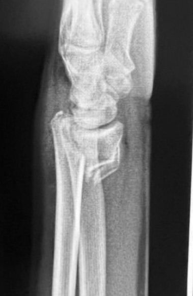
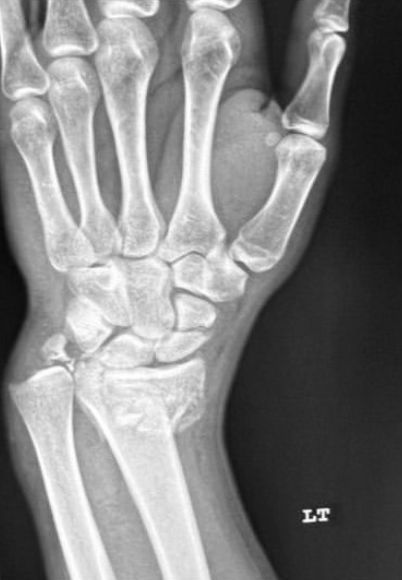
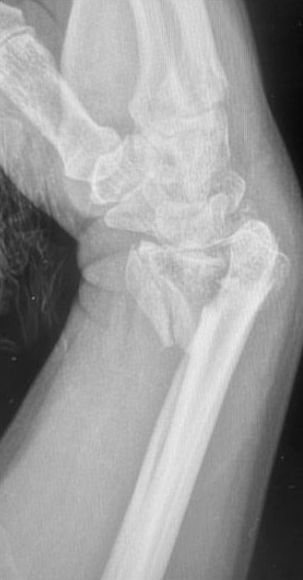
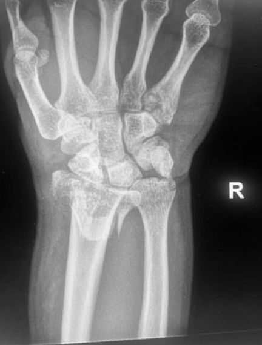

Le profil nomme la fracture, trois mesures la gradent : Pouteau-Colles, Goyrand-Smith, Barton, inclinaison radiale, hauteur radiale, inclinaison palmaire, seuils de fixation, pièges et compte rendu, avec les os de la main et du poignet en 3D.
Code couleur :
Astuce : cliquez sur une couleur pour n'afficher qu'elle.
Face et profil stricts, avant et après réduction. Le profil donne le type : fragment distal basculé en dorsal, en palmaire, ou fracture du rebord articulaire. Les trois mesures (inclinaison radiale, hauteur radiale, inclinaison palmaire) disent si l'alignement est acceptable.
Fracture
Sur le profil
Pouteau-Colles
Fragment distal basculé et déplacé en dorsal ; fracture extra-articulaire.
Goyrand-Smith
Fragment distal déplacé en palmaire : le « Pouteau-Colles inversé ».
Barton
Fracture du rebord articulaire (palmaire ou dorsal), le carpe subluxé avec le fragment.
IIOs de la main et du poignet en 3D
Main droite. Survolez ou cliquez un os pour son nom. Les mesures sont tracées sur le radius du modèle ; les repères de lecture allument les os à contrôler sur chaque poignet.
Profil et face. Clichés : Kirchberg et al., West J Emerg Med 2026, CC BY 4.0 ; recadrés.
Extra-articulaire, fragment distal basculé en dorsal.
Mécanisme : chute sur la paume, poignet en extension.
Profil : bascule dorsale, déformation en « dos de fourchette ».
Souvent : fracture de la styloïde ulnaire associée.
Fracture 2
Goyrand-Smith


Profil et face. Clichés : Kirchberg et al., West J Emerg Med 2026, CC BY 4.0 ; recadrés.
Le « Pouteau-Colles inversé » : fragment distal déplacé en palmaire.
Mécanisme : chute sur le poignet en flexion.
Profil : bascule palmaire, déformation en « ventre de fourchette ».
Instable : souvent fixée par une plaque palmaire.
Fracture 3
Barton


Profil et face. Clichés : Kirchberg et al., West J Emerg Med 2026, CC BY 4.0 ; recadrés.
Fracture du rebord articulaire, le carpe subluxé avec le fragment.
Palmaire ou dorsale : la forme palmaire est la plus fréquente.
Fracture-luxation : le carpe suit le rebord.
TDM : taille du fragment et marche articulaire.
IVLes trois mesures
Sur des incidences de face et de profil strictes, avant et après réduction. Les deux premières se mesurent de face, la troisième de profil.
≈ 22°Inclinaison radialeFace : ligne pointe de la styloïde radiale → coin ulnaire de la surface articulaire, comparée à la perpendiculaire à l'axe du radius.
≈ 11 mmHauteur radialeFace : écart, le long de l'axe, entre la pointe de la styloïde et le coin ulnaire de la surface articulaire.
≈ 11°Inclinaison palmaireProfil : ligne rebord dorsal → rebord palmaire, comparée à la perpendiculaire à l'axe. Négative = bascule dorsale.
Face : inclinaison radiale (vert) et hauteur radiale (orange).À gauche : bascule dorsale (Pouteau-Colles) ; au-delà de 10° de bascule dorsale, le trait passe au rouge.
Sur des clichés
Face : inclinaison radiale (normale ≈ 22°) et hauteur radiale (normale ≈ 11 mm).Profil : inclinaison palmaire (normale ≈ 11°), entre la ligne des rebords et la perpendiculaire à l'axe.
Clichés : Kirchberg et al., West J Emerg Med 2026, CC BY 4.0 ; recadrés, annotations d'origine retirées et remplacées par nos tracés.
VL'alignement est-il acceptable ?
Seuils qui orientent vers une fixation.
Mesure
Normale
Fixation si
Hauteur radiale
≈ 11 mm
raccourcissement > 3 mm
Inclinaison palmaire
≈ 11°
bascule dorsale > 10°
Surface articulaire
congruente
marche ou diastasis > 2 mm
Seuils de l'AAOS, chez le patient de moins de 65 ans. Après 65 ans, la fixation n'améliore pas les résultats à long terme.
VIAutres fractures du radius
Nommer le type, puis vérifier les articulations.
1
Fracture de Hutchinson (« du chauffeur »)
Trait passant par la styloïde radiale, articulaire.
2
Fracture « die-punch »
Le lunatum enfonce la fossette lunarienne du radius : marche articulaire.
3
Fracture de Galeazzi
Fracture diaphysaire du radius avec luxation radio-ulnaire distale.
4
Chez l'enfant
Fracture en motte de beurre (torus), en bois vert, et décollement épiphysaire Salter-Harris II.
Sur chaque poignet : scaphoïde et alignement du carpe.
VIIPiège : la satisfaction de recherche
Une fracture trouvée, la seconde manquée
Lisez le carpe comme si le radius était normal. Cliquez un point pour l'allumer en 3D.
VIIICompte rendu
Le type, les chiffres, les articulations.
Résultats
Poignet gauche, face et profil. Fracture extra-articulaire de l'extrémité distale du radius, à 2 cm de l'interligne, avec bascule dorsale de 25°, raccourcissement radial de 4 mm et inclinaison radiale de 15°. Fracture de la styloïde ulnaire. Alignement du carpe conservé. Pas de fracture du scaphoïde.
Conclusion
Fracture extra-articulaire de l'extrémité distale du radius à bascule dorsale, de type Pouteau-Colles, associée à une fracture de la styloïde ulnaire.
Chiffres : inclinaison sagittale, hauteur, inclinaison radiale, avant et après réduction.